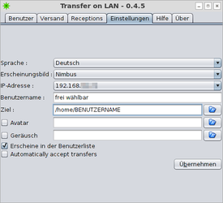
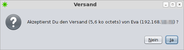
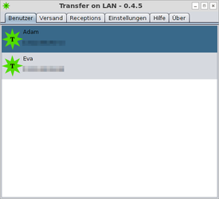
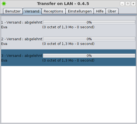

Transfer On LAN
Dieser Artikel wurde für die folgenden Ubuntu-Versionen getestet:
Ubuntu 16.04 Xenial Xerus
Ubuntu 14.04 Trusty Tahr
Zum Verständnis dieses Artikels sind folgende Seiten hilfreich:
Transfer On LAN  ist ein Programm, mit dem man Dateien im lokalen Netzwerk austauschen kann. Dabei hilft eine einfache und benutzerfreundliche Oberfläche weiter. Transfer On LAN kann durch die Verwendung von Java unter Linux, Windows und Mac OS X ausgeführt werden und bietet eine Alternative zu Giver, das nicht mehr weiterentwickelt wurde und nur bis Ubuntu 11.04 in den offiziellen Paketquellen enthalten war.
ist ein Programm, mit dem man Dateien im lokalen Netzwerk austauschen kann. Dabei hilft eine einfache und benutzerfreundliche Oberfläche weiter. Transfer On LAN kann durch die Verwendung von Java unter Linux, Windows und Mac OS X ausgeführt werden und bietet eine Alternative zu Giver, das nicht mehr weiterentwickelt wurde und nur bis Ubuntu 11.04 in den offiziellen Paketquellen enthalten war.
Grafische Programme mit ähnlicher Funktionalität sind NitroShare und Dukto.
Voraussetzungen¶
Transfer on LAN benötigt Java. Die Installation einer Laufzeit-Umgebung (JRE) ab Version 7 wird benötigt.
Installation¶
Das Programm ist nicht in den offiziellen Paketquellen enthalten.
Manuell¶
Zuerst lädt man sich das aktuelle tar.gz-Archiv von der Downloadseite  herunter. Danach muss man die Archivdatei in einen beliebigen Ordner entpacken [1]. Wer das Programm systemweit installieren möchte, findet im Artikel opt eine entsprechende Anleitung. Das gleiche gilt für die Erstellung eines Programmstarters [2].
herunter. Danach muss man die Archivdatei in einen beliebigen Ordner entpacken [1]. Wer das Programm systemweit installieren möchte, findet im Artikel opt eine entsprechende Anleitung. Das gleiche gilt für die Erstellung eines Programmstarters [2].
Hinweis!
Fremdsoftware kann das System gefährden.
Möchte man Transfer On LAN mit einem Dateimanager aufrufen, muss die .jar-Datei erst ausführbar [3] gemacht werden. Nun kann man via "Rechte Maustaste  -> Öffnen mit..." ein vorhandenes Java auswählen, beispielsweise das "OpenJDK Java Runtime 7".
-> Öffnen mit..." ein vorhandenes Java auswählen, beispielsweise das "OpenJDK Java Runtime 7".
Wenn es schnell gehen muss, ruft man das Programm einfach in einem Terminal-Fenster [4] auf:
java -jar TransferOnLAN.jar
Einstellungen¶
|  |
| Einstellungen |
Die Einstellungen sind wie der Rest des Programms sehr übersichtlich. Verändern lassen sich:
die Programmsprache
das Erscheinungsbild (Design)
die IP-Adresse (nur wenn mehr als zwei aktive Netzwerk-Karten vorhanden sind)
der anzuzeigende Benutzername
der Speicherort für eingehende Dateien
Optional kann des Weiteren festlegt werden:
ein Benutzerbild (Avatar)
eine Audiodatei (Geräusch) zur akustischen Information
ob man sich selbst in der eigenen Benutzerliste sehen möchte
ob der Empfang automatisch akzeptiert wird
Die Programm-Einstellungen werden im Ordner ~/.transferOnLan/ im Homeverzeichnis gespeichert.
Verwendung¶
Die praktische Nutzung des Programms gestaltet sich sehr einfach. Die Übersichtsseite zeigt alle Benutzer im lokalen Netzwerk, die Transfer on LAN gestartet haben. Um eine Datei zu verschicken, wählt man den jeweiligen Benutzer mit der rechten Maustaste aus und klickt auf "Sende". Nun folgt ein Dialog zur Auswahl der zu verschickenden Datei, der mit "Öffnen" (entspricht hier einem "Versende Datei") abgeschlossen wird.
|  |
| Empfangsanfrage |
Auf der Gegenseite öffnet sich nun eine Empfangsanfrage. Wenn man hier "Ja" auswählt, wird die Datei automatisch in dem Ordner gespeichert, den man in den Einstellungen des Programms als Ziel angegeben hat. Ein "Nein" beendet die Übertragung kommentarlos.
Der Absender wiederum kann unter "Versand" nachschauen, ob die gesendete Datei beim Empfänger angekommen ist oder die Annahme verweigert wurde bzw. er kann den Übertragungsfortschritt angucken.
Um das Programm auszuprobieren, kann man sich problemlos einfach selbst eine Datei schicken. Dabei ist nur zu beachten, dass die zu versendende Datei nicht aus dem Ordner stammt, der in den Einstellungen als Empfangsordner (Ziel) angegeben ist.
|  |
| Benutzer im LAN |
|  |
| Gesendete Dateien |
Problembehebung¶
Java-Version¶
Wenn zwei Java-Versionen gleichzeitig installiert sind, muss eine als Standardanwendung gesetzt werden, um das Programm mit einem Dateimanager aufzurufen. Mit folgendem Befehl kann man die Standardversion überprüfen und bei Bedarf ändern:
sudo update-alternatives --config java
Siehe auch Java/Tipps.
Firewall¶
Transfer on LAN verwendet den Port 2011 (TCP und UDP), der nicht durch eine Firewall blockiert sein darf. Ab Version 0.6.1 kann der verwendete Port angepasst werden.
Links¶
Software Tipp: Transfer On LAN - Screencast für Benutzer von Windows
Instant Webserver - weitere Programme zum Austausch von Dateien im LAN
Heimnetzwerk
 Übersichtsartikel
Übersichtsartikel
- Erstellt mit Inyoka
-
 2004 – 2017 ubuntuusers.de • Einige Rechte vorbehalten
2004 – 2017 ubuntuusers.de • Einige Rechte vorbehalten
Lizenz • Kontakt • Datenschutz • Impressum • Serverstatus -
Serverhousing gespendet von